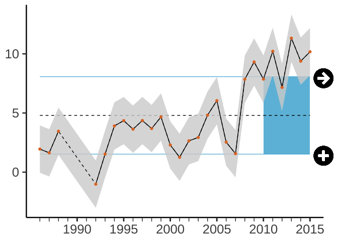
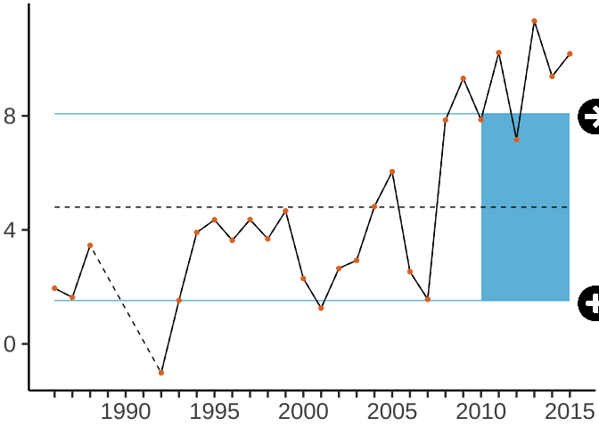
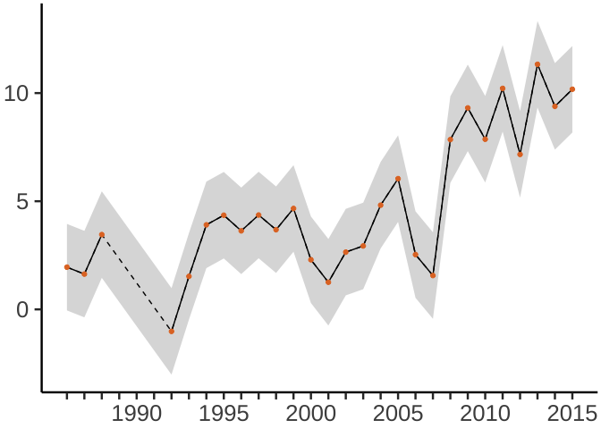

This R package consists of a set of helper datasets and plotting functions for developing and communicating marine ecological indicators, particularly for NOAA’s Integrated Ecological Assessment program in the California Current.
This package lives on Github, not yet CRAN, so you’ll need to run the following once:
remotes::install_github("marinebon/ecoidx")Then to load the package when using:
Most datasets were loaded from ERDDAP searching “cciea”.
You can see the available datasets for this package from the R Console with:
data(package = "ecoidx")Or look at the Reference.
The ERDDAP datasets are “evergreen” and preferred. These are loaded for convenience, especially for quickly trying out the data wrangling and plotting functions.
Here’s an example of using the plot_ts() function, starting with an example timeseries dataset ts1.
# example time series dataset with some NAs to show dashed line between non-NA values
head(ts1, 8)| year | index | Y2 | SElo | SEup | timeseries | metric | type |
|---|---|---|---|---|---|---|---|
| 1986 | 1.951787 | 1.951787 | -0.048213 | 3.951787 | (a) Trend and recent mean | NA | current.data |
| 1987 | 1.631605 | 1.631605 | -0.368395 | 3.631605 | (a) Trend and recent mean | NA | current.data |
| 1988 | 3.457652 | 3.457652 | 1.457652 | 5.457652 | (a) Trend and recent mean | NA | current.data |
| 1989 | NA | NA | NA | NA | (a) Trend and recent mean | NA | current.data |
| 1990 | NA | NA | NA | NA | (a) Trend and recent mean | NA | current.data |
| 1991 | NA | NA | NA | NA | (a) Trend and recent mean | NA | current.data |
| 1992 | -1.016788 | -1.016788 | -3.016788 | 0.983212 | (a) Trend and recent mean | NA | current.data |
| 1993 | 1.526880 | 1.526880 | -0.473120 | 3.526880 | (a) Trend and recent mean | NA | current.data |
# defaults to include all options
g <- plot_ts(ts1)
g
# show the caption attributed to the returned ggplot object
cat(attr(g, "caption"))
#> The index changed by less than one standard deviation of the full time series over the last 5 years (indicated by icon: →). The mean of the last 5 years was more than one standard deviation below the mean of the full time series (indicated by icon: +).
# without SElo or SEhi columns, just year and index
g <- plot_ts(ts1[,c("year","index")])
g
# same caption as previously, since defaults to x_recent=5 and add_avg=T
cat(attr(g, "caption"))
#> The index changed by less than one standard deviation of the full time series over the last 5 years (indicated by icon: →). The mean of the last 5 years was more than one standard deviation below the mean of the full time series (indicated by icon: +).
# without default x_recent, add_avg, or add_icons
g <- plot_ts(ts1, x_recent=NA, add_icons=F, add_avg=F)
g
This section is only meant for developers wishing to contribute or understand how this R package and website were built using devtools, usethis and pkgdown R packages.
Setup Github Actions to update documentation upon git push into gh-pages branch:
usethis::use_github_action("pkgdown")Modified the .github/workflows/pkgdown.yaml with 3 extra lines to fully document the package from source:
data-raw/ folderget_[dataset].R script to read, potentially wrangle and then load into R package as a dataset using usethis::use_data(). Run get_[dataset].R to generate data/[dataset].rda.R/[dataset].R. Run devtools::document() to create man/[dataset].Rd.pkgdown::build_reference() to update docs/reference/index.html.To import a library:
usethis::use_package("dplyr")
usethis::use_package("ggplot2")After updating documentation:
devtools::document()
pkgdown::build_reference()